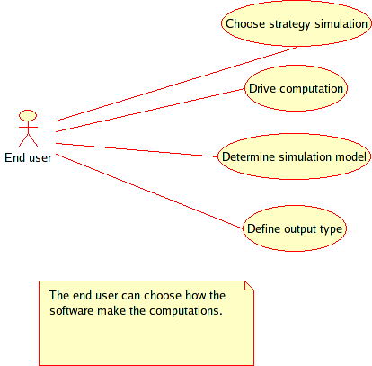
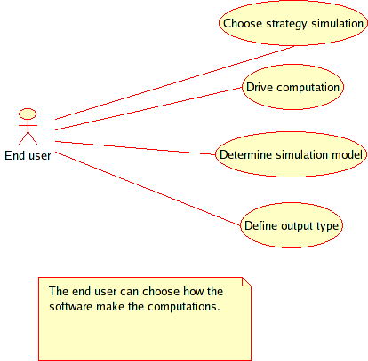
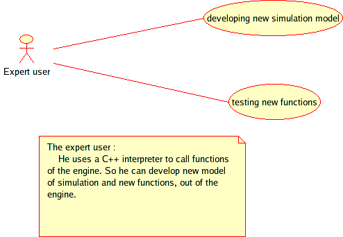

SRS > Use Cases Suite
Release Information
| Project: | Siconos |
|---|---|
| Internal Release Number: | 1.0 |
| Last update: | September 15, 2005 |
| Related Documents: |
Use Cases by Priority
Use Cases by User
| Users | All | Developer | Expert User | End User |
|---|---|---|---|---|
| |
UC-00 UC-04 | UC-03 | UC-02 | UC-01 |
Use Cases list
UC-00: Use software with three levels of competence
| Summary: | Three kind of users has been identified : End user, Expert user and Developer |
|---|---|
| Priority: | Essential |
| Use Frequency: | Always |
| Direct Actors: |
Users and Developers
|
| Main Success Scenario: | The use of Siconos must be addressed with different kind of users: These several type of use will be defined in the next use-cases |
| Notes and Questions | |

UC-01: Use with a xxxlab
| Summary: | In the first place, the Siconos platform is built and designed for the end-user |
|---|---|
| Priority: | Essential |
| Use Frequency: | Frequently |
| Main Success Scenario: | The end-user has no particular skills in computer science.
He should use the software as a black box. He will use it for:
|
|
Alternative
Scenario Extensions: |
|
| Notes and Questions |
|
 

UC-02:Expert Use with C++ or Python API
| Summary: | The expert user is also an end user, but he is more aware in numerical modeling and simulation of NSDS. |
|---|---|
| Priority: | Essential |
| Use Frequency: | Frequently |
| Main Success Scenario: | He is able to propose new numerical strategies and methods
and to
implement them in the platform. He is skilled in computer science and
knows programming in C++. Therefore, he can use the Python interface or
the C++ API of the platform to drive simulations. So, he can
|
|
Alternative
Scenario Extensions: |
|
| Notes and Questions | |

UC-03: Developer use
| Summary: | The developer is able to define or to modify the architecture of the platform. |
|---|---|
| Priority: | Expected |
| Use Frequency: | Frequently |
| Main Success Scenario: | He is skilled in computer science and knows very well the
platform's
architecture. He may access every parts of the program, and can
|
|
Alternative
Scenario Extensions: |
|

UC-04: Use in several domains
| Summary: | Several kinds of application can be simulated |
|---|---|
| Priority: | Expected |
| Use Frequency: | Sometimes |
| Main Success Scenario: |
|
|
Alternative
Scenario Extensions: |
|